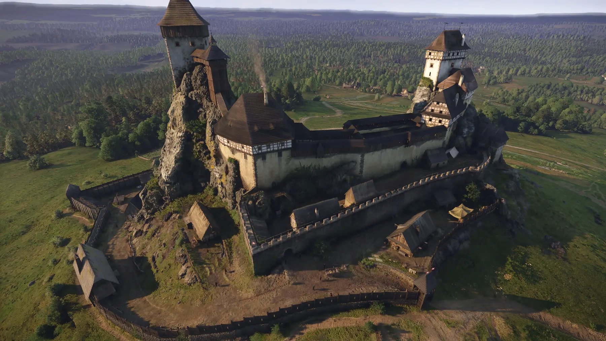
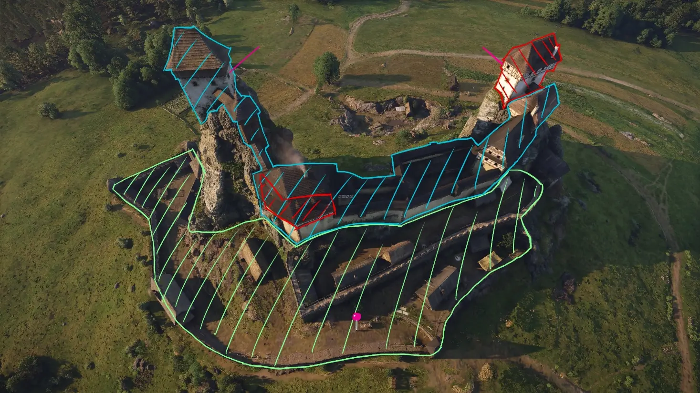
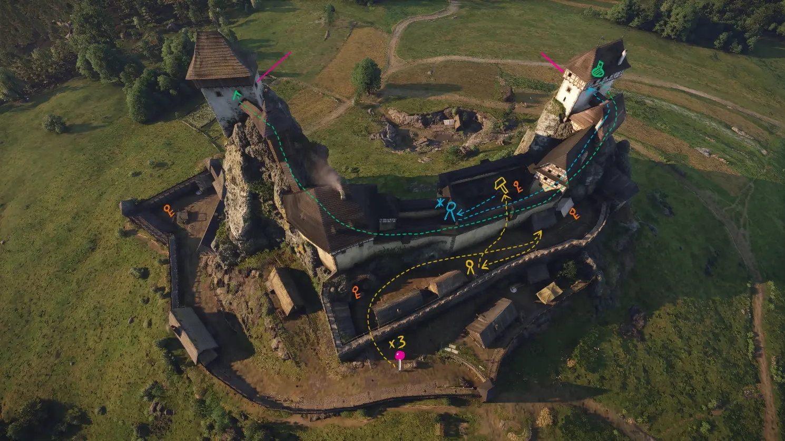
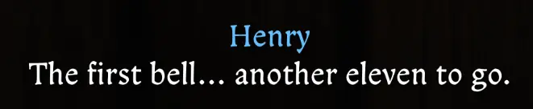
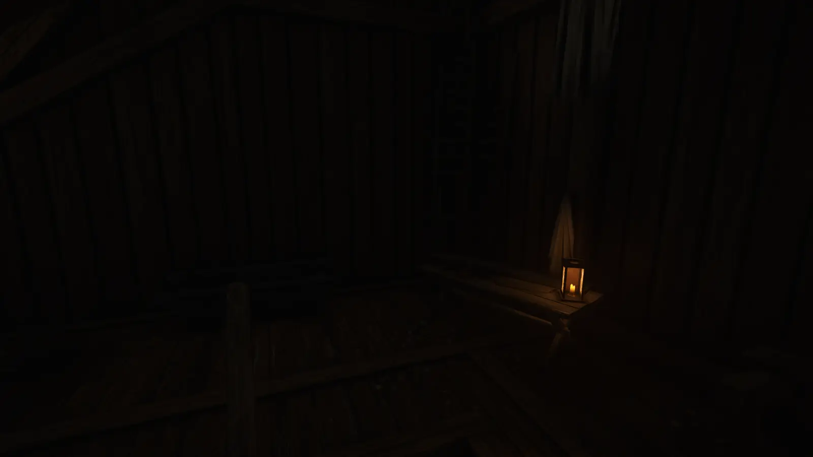
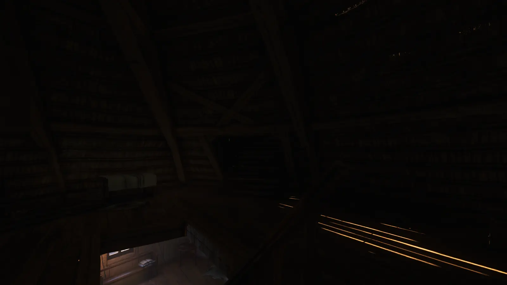

Public area
A low-pressure staging space for observation, planning, and prerequisite work.
Level analysis · Kingdom Come: Deliverance II
How a timed castle infiltration combines spatial zoning, dynamic clearance, diegetic pressure, and systemic routes to support both first-time tension and replayable mastery.

01 · Core experience
Henry begins as a prisoner and laborer in the outer courtyard. To reach the wounded Captain Thomas at the top of the Maiden tower, the player must gain access, avoid authority, or exploit systemic gaps.
The bottom-to-top progression represents a shift in both class and clearance. Side quests are not detached content: they dynamically change where the player may lawfully exist.
02 · Spatial zoning

A low-pressure staging space for observation, planning, and prerequisite work.
Detection triggers warning and escort behavior, giving navigation mistakes a recoverable consequence.
Line-of-sight contact can trigger arrest or combat, placing strict pressure on stealth and route timing.
03 · Route analysis

| Approach | Primary trade | Risk | Time | Rewards |
|---|---|---|---|---|
| Lawful route | Time for safety | Low | High | Patience and compliance |
| Well shortcut | Health for position | High | Medium | Observation and stealth |
| Tonic theft | Crime for efficiency | Medium | Low | Exploration and knowledge |
| Speedrun | Immersion for speed | Medium | Very low | System mastery |
| Brute force | Reputation for control | Extreme | High | Combat proficiency |
04 · Diegetic timer

The mission replaces a UI countdown with castle bells and Henry’s anxious reactions. Players perceive urgency without knowing exactly how many minutes remain.
The bells prevent stalling without prohibiting normal RPG exploration. The gap between perceived pressure and actual difficulty protects immersion while preserving accessibility.
05 · Post-mortem
The outer blue zone has dense intersecting patrols, while tower interiors rely on sparse static guards. Add patrol movement and reorient key guards to sustain the climax.
The hidden tonic shortcut lacks breadcrumbing. A short NPC clue could preserve discovery while making the item logically deducible.


Move a local light source toward the ladder or introduce natural light near its base. The goal is to correct the cue without adding an intrusive waypoint.